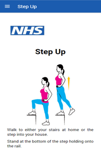

Exercise
The Application Can Help
Having surgery can put your body under a significant amount of stress, and often leaves you feeling weak and tired.
This the application can help you feel much stronger by providing you several exercises to do, by displaying diagram images along with an easy step by step instructions to get you into the mood to be fit and healthy after surgery.
The nurse will assess your baseline fitness and input the results into the app. The exercise programme you will follow has been designed to suit your individual needs and will set you acheivable targets.
By following each set of exericises the application will ask you to complete a scale about how breath you are. This can help us to adjust your activities so you are working at a comfortable level.